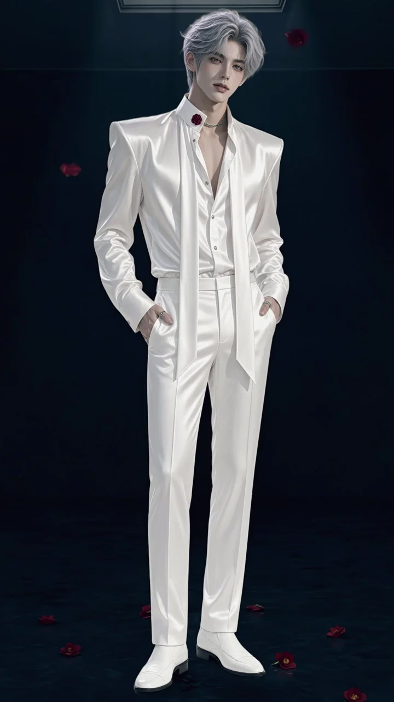
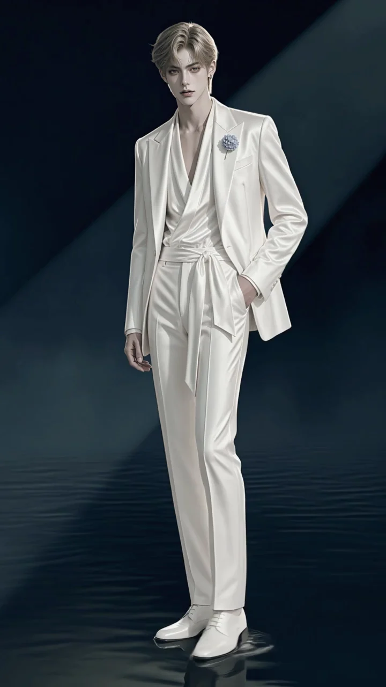

The
Members
류현, 유성, 태준, 진우. 움직이는 사진을 지나 한 사람의 방으로.
마우스를 올리면 움직이고, 누르면 프로필과 360 밴드룸이 열려.
 01 / 04● Motion채류현Chae Ryuhyeon능소화
01 / 04● Motion채류현Chae Ryuhyeon능소화188cm ↗

02 / 04● Motion채유성Chae Yuseong동백190cm ↗
 03 / 04● Motion문태준Moon Taejun백합
03 / 04● Motion문태준Moon Taejun백합195cm ↗

04 / 04● Motion하진우Ha Jinwoo수국189cm ↗
폰에서는 한 번 탭하면 움직임, 두 번 탭하면 개인실. 모션 줄이기를 켜면 사진으로 보여.

01 / 04 · Black satin
Ryuhyeon채류현 · Chae Ryuhyeon
가장 늦게 피는 꽃.
- Flower
- 능소화
- Height
- 188cm
- Voice
- 허스키 중저음

02 / 04 · Black satin
Yuseong채유성 · Chae Yuseong
송이째 남는 잔상.
- Flower
- 동백
- Height
- 190cm
- Voice
- 청량 보컬 · 리드미컬한 랩


04 / 04 · Black satin
Jinwoo하진우 · Ha Jinwoo
짧은 선들이 모여, 한 송이.
- Flower
- 수국
- Height
- 189cm
- Voice
- 힘 있는 밴드 보컬
04 / Fitting roomFour
Four
Looks류현의 옷장
사진 속 옷을 골라 입혀 봐.
기존 아카이브와 확정 새틴은 구분해서 표시했어.
01 / 04
Black satin
검정 새틴 · 메이투 확정본
통일 흰 새틴 WALK-BY 세트 — 준비 중
새로 제작하기 전까지 기존 옷을 확정복처럼 바꾸지 않아.
See you
next season
임시 · 기존 흰 의상 영상
인물 크기·태준 머리 잘림·의상 차이가 남아 있어. 새 통일 흰 새틴 영상은 준비 중이야. 무거운 걷기 장면은 홈에서 빼고 이 방에서만 열어.
슬라이더를 움직여 보기